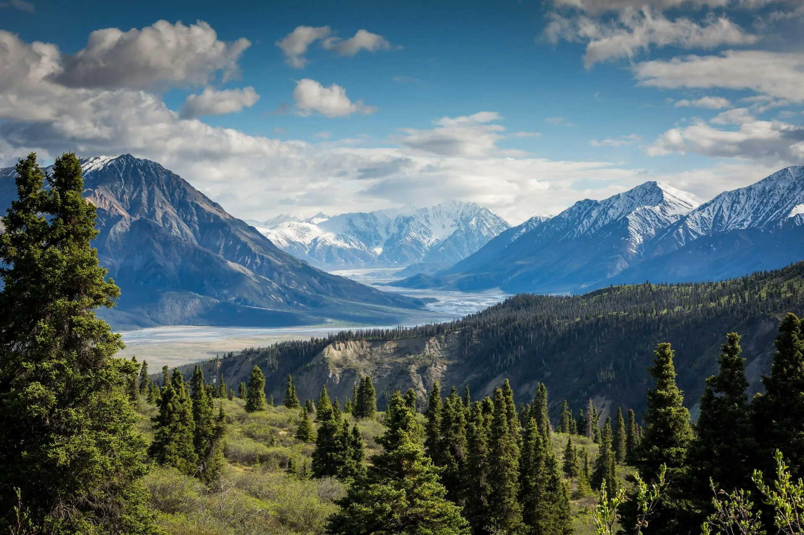
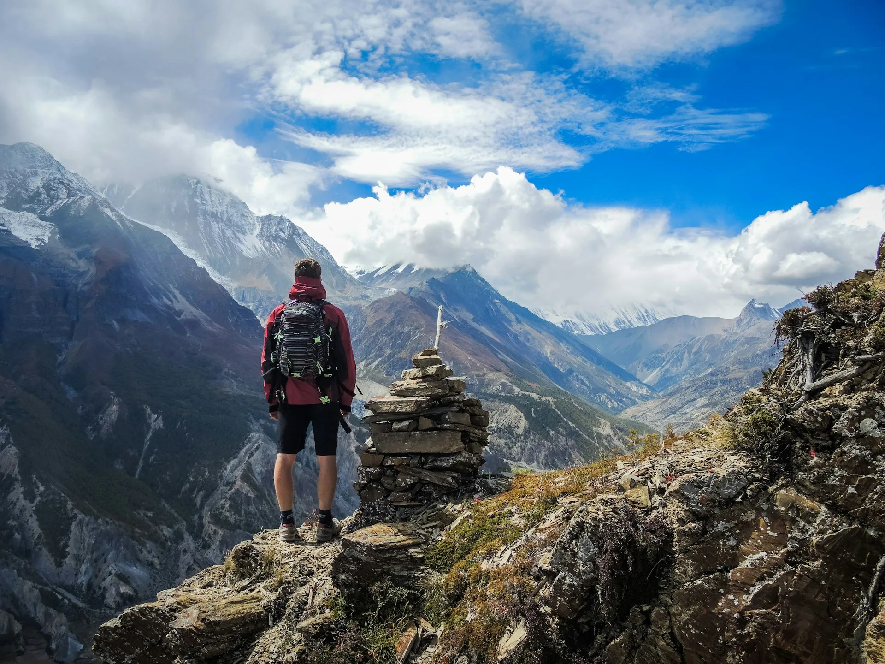
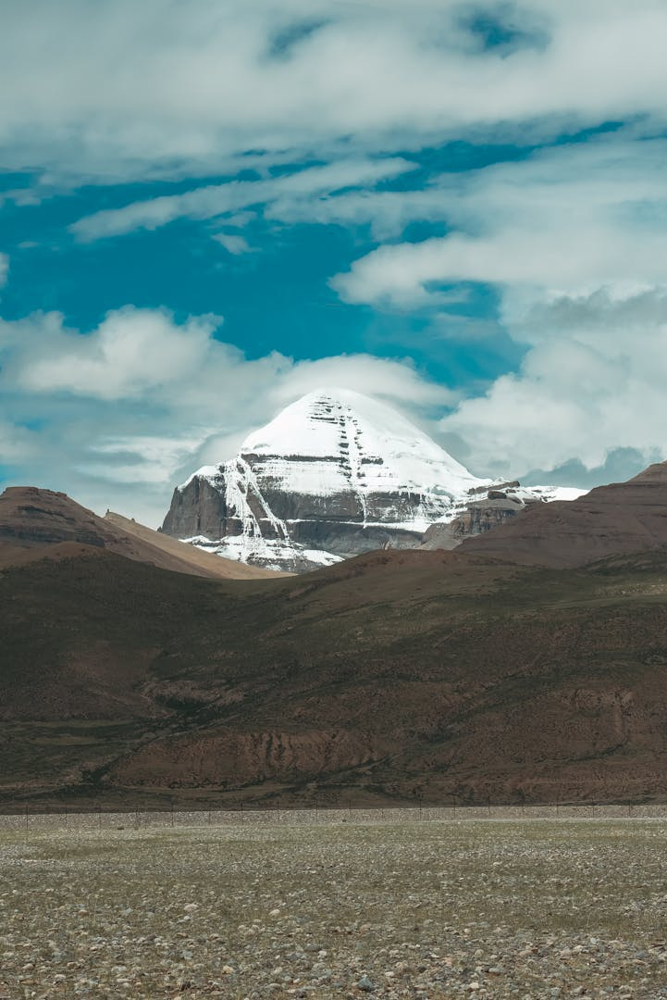

为什么选择西藏作为摩托车探险目的地？
西藏是世界上最传奇的摩托车旅行目的地之一。被称为"世界屋脊"的青藏高原，拥有令人窒息的雪山景观、古老的藏传佛教文化、人迹罕至的公路，以及地球上最高的骑行路线。
对于探险骑手来说，西藏摩托车之旅不仅仅是一次旅行——它是一生一次的旅程，穿越壮丽的峡谷、白雪皑皑的山脉、高海拔沙漠和传统的藏族村落。
无论你是经验丰富的骑手，正在寻找一次具有挑战性的远征，还是一位摩托车爱好者，渴望独特的文化冒险，西藏都将为你带来难忘的体验。
1. 世界上海拔最高的骑行目的地
西藏拥有人类星球上最高的公路，包括：
- 珠峰大本营路线
- 川藏公路（G318）
- 青藏公路
- 喜马拉雅边境公路
在海拔4000米以上的高原骑行，被喜马拉雅山脉环绕——地球上很少有地方能与之匹敌的体验。
2. 令人惊叹的摩托车路线
川藏线（G318）——中国最美的摩托车路线之一

川藏公路被誉为中国最美的摩托车骑行路线之一。
沿途亮点：
- 雪山连绵
- 深邃峡谷
- 藏族村落
- 河流与原始森林
- 高山垭口
建议时长：12-18天
拉萨—珠峰大本营摩托车路线

这是最受欢迎的西藏摩托车之旅之一。
路线：拉萨 → 羊卓雍措 → 加措拉山口 → 珠峰大本营 → 日喀则 → 拉萨
亮点：
- 布达拉宫
- 羊卓雍措圣湖
- 喜马拉雅山脉全景
- 珠峰日出
建议时长：8-12天
冈仁波齐摩托车探险

适合追求心灵体验和荒野风光的骑手：
路线：拉萨 → 阿里地区 → 冈仁波齐 → 玛旁雍措
亮点：
- 神山圣湖壮美风光
- 广袤的藏北高原
- 古老寺庙
- 极限探险公路
建议时长：15-20天
外国骑手进藏要求
外国旅行者在进入西藏前需要特别准备。
一般需要：
- 有效护照
- 中国签证
- 入藏函（ Tibet Travel Permit）
- 有组织的旅行安排
- 持证西藏旅行社
- 当地导游和保障车辆
外国游客通常无法在没有经过批准的旅行安排下独立在西藏骑行摩托车。
西藏摩托车旅行的最佳时间
5月-6月
优点：美丽的春景、游客较少、温度舒适
7月-8月
优点：温暖天气、绿色景观、最佳路况
注意：这是旅游旺季。
9月-10月 ⭐推荐
许多骑手认为这是最佳季节。
优点：
- 喜马拉雅山脉视野清澈
- 降水较少
- 骑行温度舒适
- 极佳的摄影条件
高原反应与安全提示
西藏很美，但因为高海拔而充满挑战。
许多骑行区域海拔在4000米以上。
常见高原反应症状：
- 头痛
- 呼吸急促
- 疲劳
- 睡眠不佳
应对建议：
- 在拉萨花2-3天适应
- 多喝水
- 避免大量饮酒
- 在高海拔垭口慢速骑行
- 携带基本医疗用品
适合西藏骑行的摩托车
推荐车型：
探险旅行车（Adventure Bikes）
- 宝马 GS 系列
- 本田 Africa Twin
- KTM Adventure
- 雅马哈 Tenere
中排量探险车
- 300cc-700cc 摩托车
- 高海拔操控更容易
- 更好的燃油经济性
重要装备：
- 骑行服
- 防水装备
- 手套
- 摩托车GPS
- 备件
- 补胎工具包
西藏摩托车旅行费用
团体摩托车旅行
费用约：$3,000-$8,000 美元
通常包含：
- 摩托车租赁
- 导游
- 许可证
- 住宿
- 保障车辆
- 餐饮
私人摩托车远征
费用约：$8,000+ 美元
适合需要：
- 定制路线
- 更长行程
- 摄影支持
- 偏远地区探险
西藏骑行安全吗？
是的，西藏对旅行者总体安全。
最大的挑战是：
- 高海拔
- 天气变化
- 偏远公路
通过专业的规划和当地支持，西藏可以成为亚洲最安全、最有收获的摩托车目的地之一。
开启你的西藏摩托车探险之旅
西藏摩托车之旅将冒险、文化和令人震撼的自然风光融为一体，无与伦比。
从传奇的川藏线到珠峰大本营，每一公里都是一次新的发现。
对于梦想在世界最高公路上驰骋的骑手来说，西藏是终极的摩托车目的地。
准备好骑行穿越世界屋脊了吗？
Why Choose Tibet for a Motorcycle Adventure?
Tibet is one of the most legendary motorcycle destinations in the world. Known as the "Roof of the World," Tibet offers breathtaking mountain landscapes, ancient Buddhist culture, remote roads, and some of the highest riding routes on Earth.
For adventure riders, a Tibet motorcycle tour is more than a trip — it is a once-in-a-lifetime journey through dramatic valleys, snow-covered mountains, high-altitude deserts, and traditional Tibetan villages.
Whether you are an experienced rider looking for a challenging expedition or a motorcycle enthusiast searching for a unique cultural adventure, Tibet offers an unforgettable experience.
1. The World's Highest Riding Destination
Tibet has some of the highest roads on the planet, including:
- Mount Everest Base Camp routes
- Sichuan-Tibet Highway (G318)
- Qinghai-Tibet Highway
- Himalayan border roads
Riding above 4,000 meters, surrounded by the Himalayas, creates an experience that few places on Earth can match.
2. Amazing Motorcycle Routes
Sichuan-Tibet Highway (G318) — One of China's Most Beautiful Motorcycle Routes
The Sichuan-Tibet Highway is considered one of China's most beautiful motorcycle routes.
Highlights:
- Snow mountains
- Deep valleys
- Tibetan villages
- Rivers and forests
- High mountain passes
Recommended duration: 12-18 days
Lhasa - Everest Base Camp Motorcycle Route
This is one of the most popular Tibet motorcycle journeys.
Route: Lhasa → Yamdrok Lake → Gyatso La Pass → Everest Base Camp → Shigatse → Lhasa
Highlights:
- Potala Palace
- Yamdrok Lake
- Himalayan mountain views
- Mount Everest sunrise
Recommended duration: 8-12 days
Mount Kailash Motorcycle Adventure
For riders seeking spirituality and remote landscapes:
Route: Lhasa → Ali Region → Mount Kailash → Lake Manasarovar
Highlights:
- Sacred mountain scenery
- Remote Tibetan plateau
- Ancient monasteries
- Extreme adventure roads
Recommended duration: 15-20 days
Tibet Motorcycle Tour Requirements for Foreign Riders
Foreign travelers need special preparation before entering Tibet.
Generally required:
- Valid passport
- Chinese visa
- Tibet Travel Permit
- Organized tour arrangement
- Licensed Tibetan travel agency
- Local guide and vehicle support
Foreign visitors usually cannot independently ride motorcycles in Tibet without an approved travel arrangement.
Best Time for Tibet Motorcycle Tours
May - June
Advantages: Beautiful spring scenery, less crowded, comfortable temperatures
July - August
Advantages: Warm weather, green landscapes, best road conditions
Note: This is peak travel season.
September - October ⭐ Recommended
Many riders consider this the best season.
Advantages:
- Clear Himalayan views
- Less rain
- Comfortable riding temperatures
- Great photography conditions
Altitude and Safety Tips
Tibet is beautiful but challenging because of high altitude.
Many riding areas are above 4,000 meters.
Common altitude symptoms:
- Headache
- Shortness of breath
- Fatigue
- Poor sleep
Tips:
- Spend 2-3 days adapting in Lhasa
- Drink enough water
- Avoid heavy alcohol
- Ride slowly at high passes
- Carry basic medical supplies
What Motorcycle Should You Ride in Tibet?
Recommended motorcycles:
Adventure Bikes
- BMW GS Series
- Honda Africa Twin
- KTM Adventure
- Yamaha Tenere
Mid-size Adventure Bikes
- 300cc-700cc motorcycles
- Easier handling at altitude
- Better fuel economy
Important equipment:
- Riding jacket
- Waterproof gear
- Gloves
- Motorcycle GPS
- Spare parts
- Tire repair kit
Tibet Motorcycle Tour Cost
Group Motorcycle Tour
Approximate: $3,000-$8,000 USD
Usually includes:
- Motorcycle rental
- Guide
- Permits
- Accommodation
- Support vehicle
- Meals
Private Motorcycle Expedition
Approximate: $8,000+ USD
For riders wanting:
- Custom routes
- Longer duration
- Photography support
- Remote areas
Is Tibet Safe for Motorcycle Riders?
Yes, Tibet is generally safe for travelers.
The biggest challenges are:
- High altitude
- Weather changes
- Remote roads
With professional planning and local support, Tibet can be one of the safest and most rewarding motorcycle destinations in Asia.
Start Your Tibet Motorcycle Adventure
A Tibet motorcycle tour combines adventure, culture, and breathtaking landscapes like nowhere else.
From the legendary Sichuan-Tibet Highway to Everest Base Camp, every kilometer offers a new discovery.
For riders who dream of exploring the highest roads in the world, Tibet is the ultimate motorcycle destination.
Ready to ride across the Roof of the World?